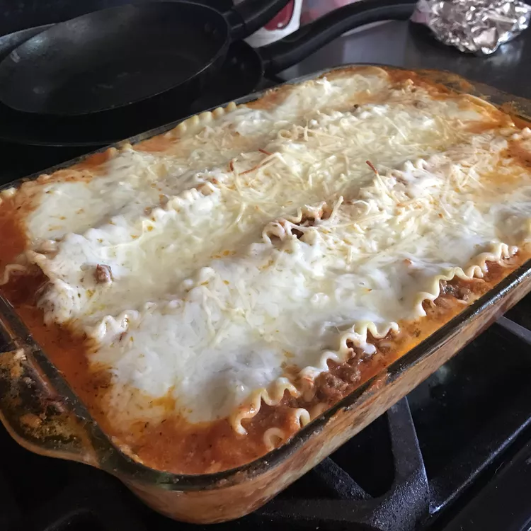

«back
Lasagna

Making perfect homemade lasagna doesn't have to be tedious. This
top-rated easy lasagna recipe comes together quickly with a
relatively short ingredient list.
Facts on the recipe:
- Prep Time: 10 min
- Cook Time: 1 hr 10 mins
- Additional Time: 10 mins
- Total Time: 1 hr 30 mins
- Servings: 12
- Yield: 1 9x13-inch lasagn
Quick Recipe
Easy Lasagna Ingredients
These are the ingredients you'll need to make this easy lasagna
recipe:
-
Beef: This easy lasagna starts with ground
beef. You can use ground turkey for a lighter option.
-
Spaghetti sauce: Use store-bought or
homemade spaghetti sauce
-
Cheeses: You'll need cottage cheese,
mozzarella, and Parmesan.
-
Eggs: Eggs help bind the cheese mixture
together. Plus, they lend moisture and richness.
-
Seasonings: Season the easy lasagna with dried
parsley, salt, and black pepper.
-
Lasagna noodles: Of course, you'll need lasagna
noodles!
-
Water: Pour ½ cup of water around the edges of
the baking dish before baking.
How to Make Easy Lasagna
You'll find the full, step-by-step recipe below — but here's a brief
overview of what you can expect when you make homemade easy lasagna:
-
Cook and drain the ground beef, then stir in the spaghetti sauce
and simmer.
-
Combine the cottage cheese, 2 cups of mozzarella, eggs, half of
the Parmesan, and seasonings.
- Assemble the lasagna according to the detailed recipe.
- Bake, covered, for 45 minutes.
- Uncover and continue baking for 10 minutes.
What to Serve With Easy Lasagna
For mouthwatering serving inspiration, explore our collection of
Easy Side Dishes for Lasagna. Here are a few of the recipes you'll
find:
- Roasted Asparagus and Mushrooms
- Garlic Knots
- Arugula-Fennel Salad
How to Store and Freeze Easy Lasagna
Store the cooked lasagna in an airtight container in the
refrigerator for up to five days. To reheat, cover the leftovers
with foil and bake at 350 degrees F for about half an hour, or until
the lasagna is heated through and the sauce is bubbly.
To freeze, wrap the lasagna in at least one layer of storage wrap
and at least one layer of aluminum foil. Freeze for up to three
months. Thaw the frozen lasagna in the refrigerator overnight, then
follow the reheating instructions above.
Full Recipe
Ingredients
- 1 pound lean ground beef
- 1 (32 ounce) jar spaghetti sauce
- 32 ounces cottage cheese
- 3 cups shredded mozzarella cheese, divided
- 2 eggs
- ½ cup grated Parmesan cheese
- 2 teaspoons dried parsley
- salt to taste
- ground black pepper to taste
- 9 lasagna noodles
- ½ cup water
Directions
- Preheat the oven to 350 degrees F (175 degrees C).
-
Heat a large skillet over medium-high heat. Cook and stir ground
beef in the hot skillet until browned and crumbly, 8 to 10
minutes. Drain and discard grease. Stir in spaghetti sauce and
simmer for 5 minutes.
-
Combine cottage cheese, 2 cups of mozzarella cheese, eggs, 1/2
of the grated Parmesan cheese, dried parsley, salt, and pepper
in a large bowl.
-
Spread 3/4 cup of sauce in a 9x13-inch baking dish. Cover with 3
uncooked lasagna noodles, 1 3/4 cups of cheese mixture, and 1/4
cup sauce; repeat layers once more. Top with remaining 3
noodles, sauce, mozzarella, and Parmesan cheese. Pour 1/2 cup
water along the edges of the dish. Cover tightly with aluminum
foil.
-
Bake in the preheated oven for 45 minutes. Uncover and bake for
an additional 10 minutes. Let stand 10 minutes before serving.
Nutrition Facts (per serving)
- Calories: 377
- Fat: 17g
- Carb: 26g
- Protein: 29g